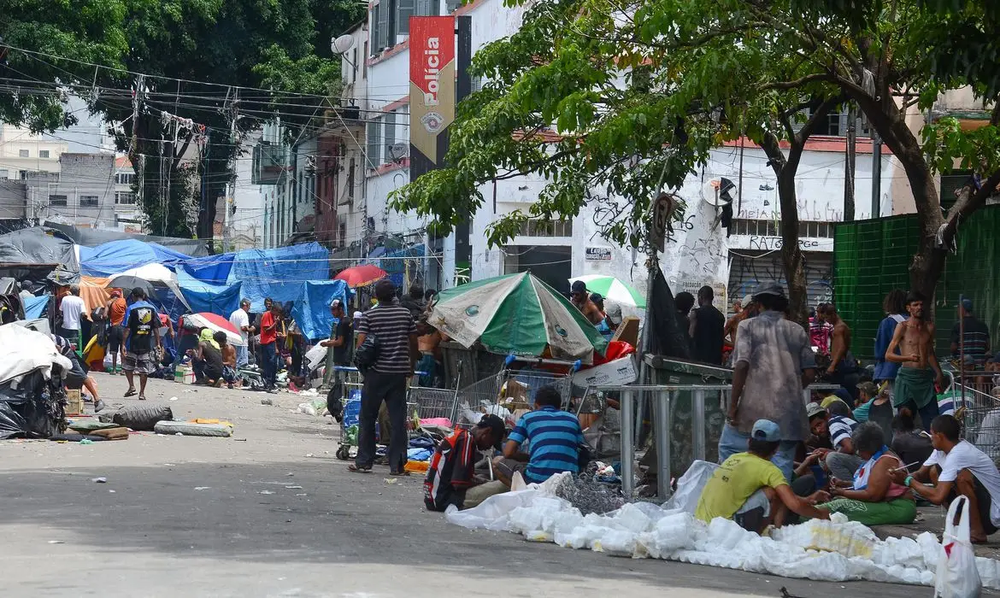

Política
Entretenimento
Esportes
Educação
Especialistas elegem projeto para política
nacional de controle de queimadas.

‘Monitor da Cracolândia’ vai mapear cri-
mes e uso de drogas no centro de SP.
Nova lei determina proteção imediata à
mulher que denuncia violência.
Comissão do Congresso já tem os inform-
es de inteligência sobre o golpe que o gene-
ral ignorou.